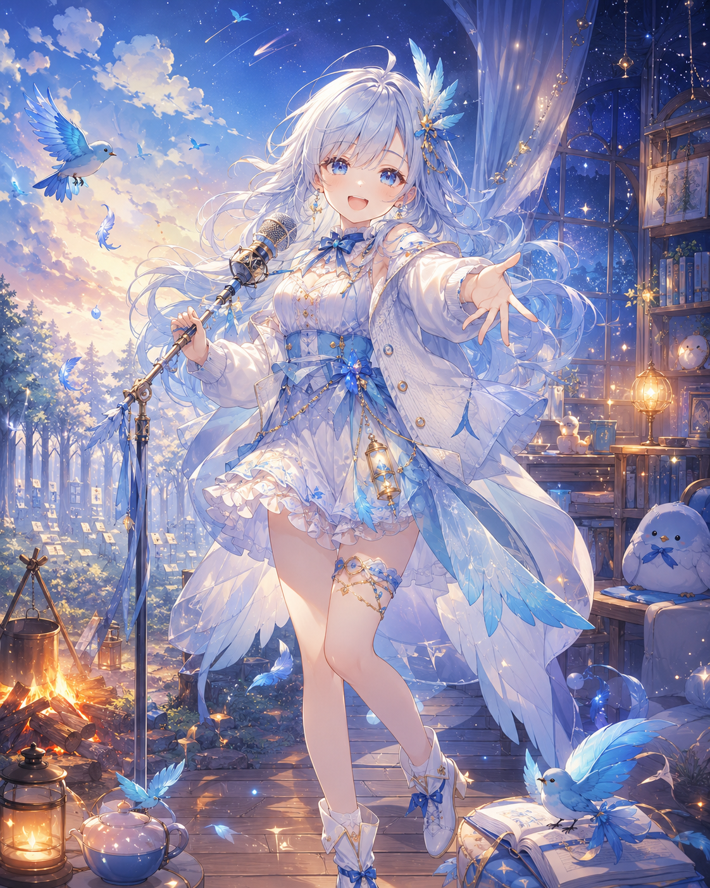

PCAI WEB v0.3
声と言葉で世界を立ち上げる、あなたのPCAI。
Cloudflareに登録した本人用 PCAI_ACCESS_TOKEN の値を入力してください。
PCAI_ACCESS_TOKEN
この値はページ内メモリだけに保持し、localStorage・GitHub・会話記憶へ保存しません。 ページを閉じると消えます。ブラウザが保存を提案しても保存しないでください。
Project Chobitsの自然会話LLM接続を、安全な最小構成で検証する公開用試作品です。
無料AIが利用不能・無料枠超過の場合は有料APIへ切り替えず停止します。